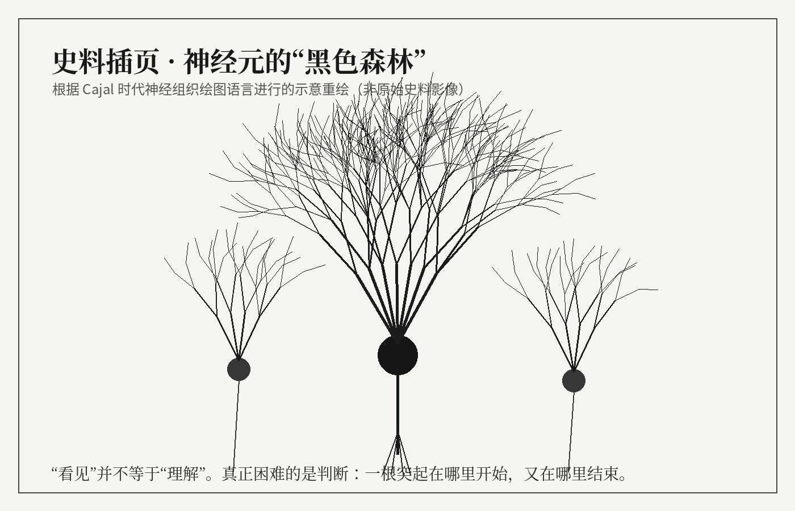
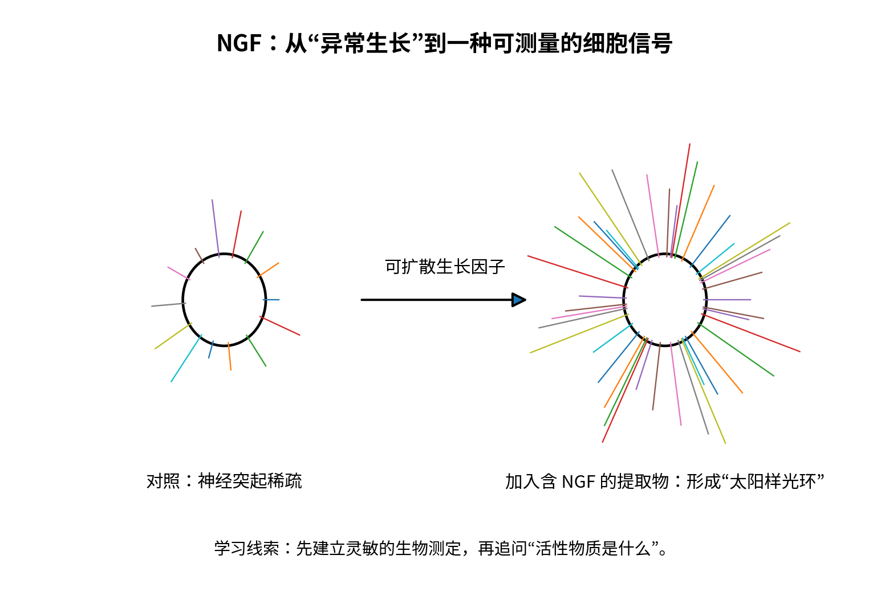

那些答案，怎样出现
一张切片为什么值得再看一次？一次异常怎样变成新的研究方向？从观察、重复到争论，小说走进重大发现被写入教科书以前的现场。
真实人物与研究事件构成背景；具体相遇和对白属于文学创作。各章保留史实说明和参考文献。
神经科学史 · 原创长篇小说
一个博士生穿越百年神经科学
凌晨，导师在一张脑图旁留下三个字：“然后呢？”一个博士生从这句问话出发，走进卡哈尔的显微镜、两颗蛙心之间的灌流液和响着脉冲的实验室。一路追问大脑，他也逐渐听懂了电话那头，母亲留给他的停顿。
 在答案出现以前，他们也曾等待。
在答案出现以前，他们也曾等待。关于这段旅程
教科书留下发现，实验室里还留着许多没有结果的下午。一个博士生来到那些下午，替人递过玻片，听过噪声，也把自己的答案咽回去。
他见过尚不知道自己将获奖的人，也见过病房里等待回答的人。穿过一个多世纪，关于记忆、感觉与意识的疑问仍在；家人的声音，开始有了另一种分量。
阅读创作与史实说明穿过历史，也回到生活
实验里的疑问向前走，生活中的牵挂也没有停下。
一张切片为什么值得再看一次？一次异常怎样变成新的研究方向？从观察、重复到争论，小说走进重大发现被写入教科书以前的现场。
真实人物与研究事件构成背景；具体相遇和对白属于文学创作。各章保留史实说明和参考文献。
主人公带着一张解释不清的脑图离开，却不能只靠一张更漂亮的图回来。电话、饭菜、脚步与笔记，把他的研究慢慢接回与家人相处的日子。
关于大脑的故事，也关乎等待、工作、记忆，以及一句最普通的报平安。
全书目录
按章节读，也可以随时回来。
01 / 六部
旅程从显微镜下的黑色枝条开始。细胞在哪里结束，信号怎样跨过去，又怎样在一根轴突中传播？在玻片、蛙心与卧室里，主人公看见那些后来成为常识的问题，最初怎样使人束手无策。
02 / 六部
一只朝错误方向扑击的青蛙，一个只能说出“Tan”的病人，一条让扬声器突然响起来的斜线。大脑怎样组织连接与信息？地图开始出现，地图之内的工作却仍需追问。
03 / 六部
电话里的声音、厨房的气味、舌头上的辣和手里的杯沿，让旅程回到身体。声音怎样在耳朵里行走，鼻子怎样区分气味，身体又怎样感到温度、压力和自己的位置？
04 / 六部
知道水杯在哪里，并不等于已经伸出手。饥饿、口渴、行动与昼夜节律，在身体里交会。主人公开始关心：一次行动怎样开始，一个活着的身体又怎样知道什么时候该停下来。
05 / 六部
脚步声提前唤起等待，一个人忘记练习，却仍能画得更好。经历怎样留下，又怎样被保留在细胞、突触和空间活动之中？本子上的路线渐渐变长，仍没能写完“家”的意思。
06 / 六部
蜜蜂的舞蹈、挡板后伸出的手、磁共振里的信号与病房中的沉默，把疑问推向人与世界。看见、理解和改变之间隔着什么？回到那张脑图，主人公也终于回到自己的生活。
从书里翻出几页
三段正文，三幅随文插图。插图为示意或重绘，完整图注见对应章节。

显微镜前 · 第1章
凌晨十二点四十七分，空调还在响。楼下最后一家便利店的灯也快熄了，我却把同一张全脑功能连接图又放大了一倍。红线和蓝线从一个脑区牵到另一个脑区，连得很热闹，像一座人人都在赶路的城市。我核对过数据、协变量和多重比较校正，十一条连接还留在屏幕上。下午发给导师的图，他只回了一句话：“图很好看。然后呢？”我在电脑前坐到半夜，没有想出第二句。继续读这一章

卧室里的工作 · 第5章
“别碰那盒蛋。”女人没抬头，声音不高。我伸到半空的手停住了。窗边的桌子上有一盏灯、几只玻璃皿和几枚鸡蛋，床就在另一边。谁家把卧室布置成这样，我一时说不清。她用铅笔在一张纸上作了记号，才抬头看我，仿佛我并不是从另一个世纪跌进来，只是一个来得太早、还没找到事做的帮手。继续读这一章

记忆留下的事 · 第16章
文件右上角只写着两个字母：H.M.。我拿着它站在门口，迟迟没有坐下。屋里的人却先替我挪开一把椅子，问是不是需要放本子的地方。布伦达·米尔纳向他道谢，他又向我问好，语气平稳而客气。那一瞬间，我想起所有写过这两个字母的论文，也突然觉得自己对眼前这个人知道得太少。继续读这一章
按自己的节奏读
可以从第一章读起，也可以先从一个熟悉的问题进入。
六部、二十四章，保留完整正文与八十一幅插图。每章末尾可以进入下一章，也可从目录跳回任何一段旅程。
从第一章开始 →选中正文可以划线或写笔记，目录里可以收藏章节、继续上次阅读。笔记保存在当前浏览器；换设备前可导出备份。
正文页提供字号、字体、行距及日夜主题设置。插图下可展开完整图注，各章末尾保留史实说明和参考文献。
完整 PDF 含封面、版权页、目录、章节书签、页码和随文插图，可离线阅读、检索文字或打印。
下载完整 PDF →“图很好看。然后呢？”
故事从这句问话开始。
进入第一章 下载完整电子书